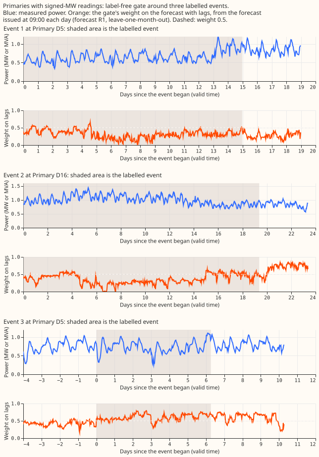
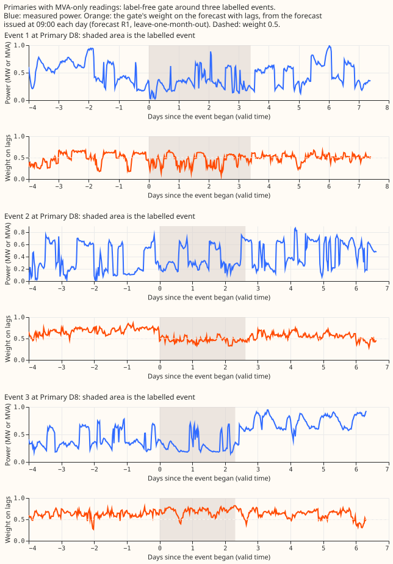

Experiment 402: a learned gate between a forecast with power lags and a forecast without them
Results
The gate removes most of the harm from corrupted lags on injected load shifts and gains little on real ones. Definitions used below. A load shift is demand moved from one substation to its neighbours. A harm row is a forecast row whose target is outside every event but whose lagged readings (the readings 1 day, 2 days, and 7 days before the forecast origin, at the same time of day) touch one. The six are the 6 Primary substations with signed-MW readings and the eight are the 8 with MVA-only readings; two further Primaries (D15 and D18) are report-only. A gate is a small XGBoost model that sets the weight w of a mixture w times the forecast with lags plus (1 minus w) times the forecast without lags. Every score is a mean exact continuous ranked probability score (CRPS) of the mixture, in points of effective capacity (percentage points of a substation's effective capacity); smaller is better. "Forecast R1" is experiment 392's forecast with lags trained with the labelled events removed. "The R0 pair" is the forecast with lags refitted here on plain targets, beside experiment 392's forecast without lags. The scores come from two evaluations. Step 4 scores forecast R1 leave-one-month-out over four months (2025-10, 2026-01, 2026-03, 2026-06). Step 5 scores the R0 pair forward-only (2026-01, 2026-03, 2026-06).
Caveat that applies to every table below: NGED's logs miss some load-shift events. The score on clean rows is therefore optimistic, and the real-event slices undercount events.
A perfect event flag would add little at the six and nothing at the eight (step 1, analytic ceilings). The flag oracle is a gate that is told which rows have a lag inside an event. Held out by event, it beats the fitted constant mixture per group by about 0.14 points on harm rows at the six (95% interval -0.47 to +0.10). Prediction P1 asked for at least 0.3 points, so P1 is not met. One event (event 55 at D16) supplies 110% of the gain: with that event left out the gain is +0.016 points, so the sign flips. At the eight, the forecast with lags beats every mixture on harm rows. A constant weight chosen by the decile of the gap between the two forecasts' medians needs no labels and captures most of the flag oracle's gain at the six. The per-row oracle weight would lower the score by 0.7 points on harm rows at the six, and separately by 0.41 points on clean rows at the six, where there is no event to detect, so most of its gain comes from knowing the outcome.
Injected shifts pass on a share of the step close to real events (step 2, real-event counterfactual). Replacing the lags inside a labelled event by the stage-1 median, the median share of the step that the forecast with lags passes on is 0.15 with one lag inside the event (186 rows, 17 events), 0.17 with two (62 rows, 14 events), and 0.32 with three (17 rows, 6 events). The synthetic step of the same size gives 1.09, 1.11, and 1.20 times those shares. The shares differ by less than a factor of 2 (prediction P2), so the injection stays as designed. The three-lag estimate rests on 6 events. These shares agree with experiment 395 Part E, which found a median share of 0.368 with all three lags affected, and not with Part F, which found 0.94.
The gate gains 0.6% to 2.3% on injected rows and under 0.5% on real rows (steps 4 and 5). Mean exact CRPS over all rows of the injected test world (seed 2) and over all real-event rows. "Gate, full" is the gate fitted separately for each metering group, fed all features; "Gate, flag" also sees the true event flag and bounds it. The constant mixture is fitted per group on injected events for the injected rows and on real labels for the real rows.
| Rows | Forecast with lags | Forecast without lags | 50/50 mixture | Constant mixture per group | Gate, full | Gate, flag |
|---|---|---|---|---|---|---|
| Injected, six, forecast R1 | 4.576 | 4.439 | 4.307 | 4.306 | 4.247 | 4.232 |
| Injected, eight, forecast R1 | 5.449 | 5.522 | 5.297 | 5.312 | 5.278 | 5.246 |
| Real, six, forecast R1 | 4.291 | 4.439 | 4.220 | 4.210 | 4.207 | not defined |
| Real, eight, forecast R1 | 5.196 | 5.522 | 5.220 | 5.172 | 5.226 | not defined |
| Injected, six, R0 pair | 4.822 | 4.778 | 4.605 | 4.637 | 4.531 | 4.524 |
| Injected, eight, R0 pair | 5.475 | 5.414 | 5.288 | 5.286 | 5.263 | 5.244 |
| Real, six, R0 pair | 4.533 | 4.778 | 4.515 | 4.516 | 4.492 | not defined |
| Real, eight, R0 pair | 5.191 | 5.414 | 5.202 | 5.169 | 5.198 | not defined |
- Prediction P3 holds at the six, and holds narrowly at the eight for one of three gate variants. On forecast R1 the full gate captures 79% of the flag gate's gain over the constant mixture per group at the six and 52% at the eight when one gate is fitted per metering group. The pooled gate (one gate for both groups) captures 73% and 46%, and the gate with the metering group as an input captures 75% and 48%. At the eight the stop rule (under half) therefore fires for two of the three variants, and the series is not stopped only because the maintainer's lenient rule applies. On the R0 pair the per-group full gate captures 94% and 56% (pooled 87% and 73%). The gate that sees only the lagged readings' surprise and the lead time captures 69% to 76% at the six and 69% to 81% at the eight, so the window means, the median gap, and the neighbour features add little at the six and nothing at the eight.
- Prediction P4 is only partly met, and its intervals include zero. On real harm rows at the six
the full gate beats the 50/50 mixture by 0.10 points on forecast R1 (95% interval -0.26 to +0.02,
event 146 at D5 supplying 64% of it) and by 0.08 for the R0 pair (-0.25 to +0.07, event 146
supplying 96%). Against the constant mixture fitted on injected events the gain is 0.04 points on
forecast R1 (-0.17 to +0.04) and -0.02 on the R0 pair (-0.26 to +0.20), where one event (149 at
D5) decides the sign; against the constant mixture fitted on real labels it is 0.11 on forecast
R1. A gain under 0.1 points counts as
small gain, so the gain is small or borderline. Over all real rows at the six the gate and the constant mixture fitted on real labels differ by 0.003 points, which is zero within noise. At the six the gate scores no worse on clean rows than the 50/50 mixture. At the eight the clean-row score is 0.003 worse. - The gate does what it was built for on injected load shifts, though the simpler options come close. On injected harm rows at the six its mean weight on the forecast with lags is 0.42, against 0.51 on clean rows, and it scores 4.11 against 4.34 for the 50/50 mixture, 4.23 for the constant mixture per group, 4.14 for the forecast without lags, and 5.29 for the forecast with lags. At the eight it scores 5.55, against 5.51 for the forecast without lags.
- At the six the gate scores worse than the 50/50 mixture when the target is inside a real event. On real rows at the six whose target is inside a labelled event (7,960 rows, 11 events) the gate scores 10.75 against 10.50, and its mean weight on the forecast with lags is 0.38. Dropping any single Primary leaves the sign unchanged. A gate trained on real labels (not usable for substations without labels) scores 10.41 there. At the eight (4,278 rows) the gate scores better than the 50/50 mixture, 11.92 against 12.08.
- Real harm rows are few, and the eight are unstable. There are 11,194 harm rows at the six and 6,609 at the eight, drawn from the 11 labelled events in the test months. These gains are estimates and not tests. At the eight, dropping D3 or D8 flips the sign of the gate's contrast against the forecast with lags.
Upper-tail coverage is 0.65 to 0.68 inside real events at the six, for every arm (forecast R1, real rows). Coverage is the share of actual readings at or below the forecast's quantile, so the target is 0.95 for q95 and 0.99 for q99. The gate leaves tail coverage where the 50/50 mixture has it: at the six on harm rows its q95 coverage is 0.883 against 0.880 for the 50/50 mixture and 0.857 for the forecast with lags, and inside events all arms miss the target by about 0.28 at q95 and 0.22 at q99. The 50/50 mixture, the constant mixture, and the gate raise q95 coverage over the forecast with lags on clean rows by about 0.015.
| Rows | Forecast with lags | Forecast without lags | 50/50 mixture | Gate, full |
|---|---|---|---|---|
| Six, harm rows (11,194): q95 / q99 coverage | 0.857 / 0.957 | 0.813 / 0.964 | 0.880 / 0.966 | 0.883 / 0.968 |
| Six, target inside an event (7,960): q95 / q99 | 0.652 / 0.776 | 0.651 / 0.768 | 0.675 / 0.780 | 0.674 / 0.774 |
| Six, clean rows (148,539): q95 / q99 | 0.903 / 0.979 | 0.877 / 0.978 | 0.919 / 0.981 | 0.919 / 0.980 |
| Eight, harm rows (6,609): q95 / q99 | 0.905 / 0.982 | 0.921 / 0.983 | 0.933 / 0.983 | 0.932 / 0.984 |
| Eight, target inside an event (4,278): q95 / q99 | 0.920 / 0.979 | 0.953 / 0.984 | 0.954 / 0.983 | 0.955 / 0.984 |
| Eight, clean rows (217,827): q95 / q99 | 0.917 / 0.983 | 0.911 / 0.982 | 0.930 / 0.983 | 0.930 / 0.983 |
Event plots. Figure 1 and Figure 2 show three labelled events at the six Primaries with signed readings (D5, D16, D5) and three at the eight with MVA-only readings (all D8), as forecast R1 saw them. In these six events the weight on the forecast with lags is low (about 0.3) through the first two events at the six and stays low for days after the second ends. It rises above 0.5 inside the third event at the six. At the eight it falls from about 0.6 to about 0.4 inside the first two events and does not move in the third. The plots show one forecast per day (issued at 09:00, shortest lead).


Not run
- The first look is complete but narrow. The per-Primary contrast intervals, the smoothness and
promptness measurements, the lag-encroachment sweep, the avoidable-curtailment table, and the
cold-night table in the plan were not produced. Tail coverage (q95 and q99) is reported for
forecast R1 on real rows only, from
e00402_tails.py, and not for the R0 pair. The slice report (e00402_report.py) gives the per-group harm, event, and clean tables only. - Four monthly forecast refits were scored, not twelve.
- Neighbour graph at scale. A data-derived neighbour graph would need a connection list for each of about 1,300 substations. The gate here used NGED's list for 16 Primaries (the 14 scored and the 2 report-only).
Checks
- The planned comparison of the median forecast with the mean forecast per Primary was not computed, so a bias between the two is untested. Every score here is the exact CRPS; the protocol's 11-quantile CRPS was not tabulated.
- No audit trigger applies to the production code, because the experiment changes nothing under
src/orpackages/. Two triggers are met on the results: P1 is not met, and one event (event 55 at D16) supplies more than the whole step 1 gain. The page records each, and the manager decides whether an audit follows.
Plan
- Question. Experiment 400 fitted a mixture weight from the lag surprise scores on real rows
and found that the weight hardly moved around load shifts, because event-lag rows are 2.6% of the
fit. Can a gate trained on injected events, whose truth is known, learn when to trust the lags?
The gate must need no NGED load-shift labels, because about 1,300 substations will have none.
The real label table (
sw_block_detector_label_table_corrected.csv, 133 rows, 112 usable) is used only to choose the injected depth and duration distributions and to evaluate. - Design source. The proposal, its two debate rounds (round 1 Sonnet, round 2 critic), and the
maintainer's instructions of 2026-10-30 are in
briefs/load_shift_lag_gate_brief.md. The critic's corrections govern. Credit: the mixture-of-two-forecasts blend is experiment 400's; the surprise scores are experiment 391's stage 1; the R1 boosters and the injection harness are experiments 392 and 395 (Part E). - Gate model. One weight per row, depending on lead time. The CDF of the mixture is F2 + w (F1 - F2), so its exact CRPS is A w² + B w + C with A = ∫(F1-F2)², B = 2∫(F1-F2)(F2-H), C = CRPS(F2), where F1 has lags, F2 has none, and H is the step at the actual. The label is w* = -B / (2A), the sample weight is A, and the gate is a shallow XGBoost squared-error booster with identity link, prediction clipped to [0, 1]. A logistic baseline is the first arm. A small neural network is tried only if the XGBoost gate plateaus. The CDFs are linear between the 11 quantiles with the outer segments extended to levels 0 and 1, as in experiment 400.
- No over-smoothing (maintainer). Load-shift events are sudden. The only smoother allowed is causal and short, along valid time within one run. Report each smoother's half-life and the delay of the blend's response at an onset against the unsmoothed weight. A delay of more than a few half-hours is a failure of that smoother.
- Injection. Clean periods only (no labelled event, flagged zeros dropped). A donor Primary loses a fraction f of its own series and one or more connected recipient neighbours gain it (load conserved, both polarities). f is the table's depth divided by the donor's trailing 30-day mean; the depth quantiles in MW at 0, 10, 25, 50, 75, 90, 100% are about 0.17, 0.52, 0.70, 1.10, 2.2, 3.0, 5.4, and the duration quantiles in hours about 2.4, 4.8, 8.1, 47.9, 84, 168, 747 (the proposer's tally, re-counted in step 1). A parametric rule needs no table: log-uniform interpolation of f between these quantiles. 30% of events have no observed recipient (31 of 112 rows name one Primary; swept at 0%, 30%, 60%). Transient spikes and outliers that are not load shifts are injected too: single half-hours and runs of up to 6 half-hours at 0.5 to 3 times the donor's trailing 30-day standard deviation, both signs. Injected events never enter evaluation.
- Gate features. For each of the three lags: the single-step surprise and the signed MW
residual, with window statistics at half-widths 1.5, 3, 6, 12 h (24 h; 84 h for the week lag
only): mean, median, min, max, standard deviation, signed sum, count above the band, and a
triangular tent mean. All windows of all three lags truncate at the telemetry cut-off, as
e00391_fit.pydoes withNEWEST_AGE. Neighbour features from the neighbours' own surprise at the same lag time: max, min, sum, and the counts above +1 and below -1. The sign logic is learned. The gap between the two forecasts' medians is a named feature, ablated. - Surprise source and alignment. Every surprise comes from experiment 391's stage-1
enstable (work/stage1/ens/<site>.parquet), which refits monthly from 2024-10-01 and predicts only the half-hours from its refit to the next, souis out of sample for every lag time from 2024-10. For an injected series the injected value is passed through the stored stage-1 quantiles of that half-hour (no new prediction). The four forecast refits (2025-10-01, 2026-01-01, 2026-03-01, 2026-06-01) each use lag times at or before the origin, whose stage-1 refit is the one at the start of that lag time's month. Stage 1 reads the ENS control member and keeps one row per valid time (150 rounds, eta 0.15); the forecasts with and without lags pool 51 members at 500 rounds. The gate therefore sees a surprise from a different recipe than the forecasts. Step 4 checks that the surprise separates injected events from clean periods at the lag times, and reports the gap as a caveat. - Cleaned data. Every training row, lag, and scoring actual uses cleaned data with flagged
substation_zerohalf-hours dropped. The count dropped per fold is reported. - Steps (stop rules above).
- Analytic ceilings (no fit; at most 4 cores,
MemoryMax=10Gin total with step 2). A, B, and C per row from experiment 381's weekly bundle (forecast with lags) and experiment 383'swork/arms/lagless.parquet(forecast without lags), over Part F's rows. Evaluate the per-row oracle weight, the flag oracle (best constant w on event-lag rows, the fitted constant elsewhere), and the fitted constant mixture with lead time. One stated widening: both forecasts are used raw, as in experiment 400. Also on the R1 pair's four months. - Real-event counterfactual and synthetic sweep (at most 4 cores, shared with step 1).
Re-predict experiment 392's R1 lagged boosters
(
00392-.../work/boosters/r1_lagged/<site>_s0_<refit>.ubj) with the lags inside each corrected labelled event replaced by the stage-1 median, and compare the share of the step passed on with that of synthetic steps of the same depth and lag count. This settles the disagreement between experiment 395 Part E (median moves 36.8% of a step with all three lags affected) and Part F (median share 0.94). - Refit the lagged forecast on plain targets (arm R0 lagged) at the four refit dates.
500 rounds, monthly recipe, experiment 392's
e00392_fit.py --arms r0 --forms lagged, boosters saved under this experiment's folder. Starts when the manager grants the GPU slot, in parallel with step 2. About 2 hours of GPU; cores and GPU processes reported to the manager before it starts. - Gate screen on the R1 pair. Leave-one-month-out across the four refit months (training rows with valid time on or after the first of the scored month are cut). Arms: (a) fitted constant mixture; (b) gate given the injected truth flags; (c) single-step surprise only; (d) all window statistics; (e) own-Primary-only; plus nested feature sets. Core estimate given to the manager before it starts.
- Forward-only confirmation on the R0 pair. Train on injected events only; evaluate on real events that end at least 14 days before the scored month, logged transfers (66) and scanned events separately, with and without D8 and D5. Optional real-label arm, separate: it could not be repeated at scale, and 46 of the 112 labels were found by scanning the series the gate reads.
- Analytic ceilings (no fit; at most 4 cores,
- Per-group splits (maintainer, relayed 2026-10-30). Before steps 4 and 5, every gate arm in step 4 is run three ways: one pooled gate, one gate with the metering unit (signed MW or MVA-only) as an input, and a separate gate per group. The fitted constant mixture and the flag oracle get the same split (one weight per group against one pooled weight), so that the upper bound is stated per group. Every table reports per Primary as well as per group; D15 and D18 are report-only.
- Why the MVA-only eight differ. Step 1 reports, per Primary, whether the lags help the forecast with lags outside events, how many events each Primary has, and how deep and long they are relative to capacity.
- Event time-series plots (maintainer, relayed 2026-10-30). The result page shows at least 6
time-series plots of real events from the corrected label table, covering both metering groups
(signed MW and MVA-only). Each plot marks when the event starts and ends and shows the actual
reading, the median, and the 90% band of the forecast with lags, the forecast without lags, and
each gate's blend. Plots follow the
datavizskill. Generators are not involved (demand series only), so no anonymisation is needed. - Caveat: unlabelled events (relayed 2026-10-30). NGED says load-shift events may be missing from their logs (one on 2022-01-12 is not in the label table). Clean-lag rows and clean training periods can therefore contain events that no label covers. The harm table's baseline (clean-lag rows) is optimistic, and the real-event slices undercount events. Every write-up repeats this caveat. Injected events stay the main training signal because they need no logs.
- Changes after the Opus plan review.
- Comparators. Every stop rule and contrast uses the fitted constant mixture per group (one weight per lead day and metering group) as its comparator, and also reports the forecast without lags. The pooled constant is descriptive only. Step 1 also reports leave-one-Primary-out and leave-one-event-out contrasts, and clusters the bootstrap by load-shift event (all Primaries the event touched).
- Non-inferiority margin. The contrast over harm rows, clean rows, and the 7 days after each event is pooled per group. Clean rows are 96% of rows at the six, so the clean-row margin at the six is 0.005 points. At the eight the target is non-inferiority against the forecast with lags (margin 0.01 points). The gate with the metering unit as an input and the gate per group are the headline arms; the pooled gate is descriptive.
- Arms. Arm (b) gets the injected flags plus every feature of arm (d) and bounds it; the flag-only version is a separate arm. A new arm (f) is the same gate trained on real, unmodified rows (label w* needs only actual readings), so a gain is credited to the injection only if (d) beats (f). Step 1 adds feature oracles (a constant per group, lead day, and decile of the absolute gap between the two medians).
- Folds. Step 4 is true leave-one-month-out, cutting training rows whose valid time or lag time is in the scored month and origins within 14 days before it. Step 5 is forward-only and evaluates harm rows whose target is in the scored month; the 14-day rule applies to the training events of the real-label arm. Constants are cross-fitted on the same folds.
- Injection. Step 2 adds a variant that scales the series by a fraction (the injection the plan uses) beside the constant step, and repeats on the R0 lagged boosters. At the eight, only windows whose reading stays above 20% of capacity receive an injection. Spike size is 4 to 20 times the stage-1 residual's median absolute deviation. A sensitivity arm chooses clean base periods without labels.
- Power. Step 5 is an estimate with a leave-one-event-out table, not a test. Step 1 is repeated on the R1 pair (using experiment 392's stored forecasts) and on the R0 pair.
- Pre-registered contrasts (step 5). Each of arms (c), (d), (e), and the logistic baseline minus the forecast with lags, minus the fitted constant mixture, and minus the forecast without lags, on (i) rows whose target is outside every event and whose lags touch one, by number of lags, at the six and at the MVA-only eight; (ii) all other rows outside the 7 days after. The Bonferroni k is fixed in the commit that precedes step 5. Intervals: months resampled for pooled rows, events for event slices.
- Reports (as in the brief): the harm table; cost outside events per Primary; weight by lag status, injected kind, and lead; smoothness and promptness; the lag-encroachment sweep on the blend; avoidable curtailment during events and in the following 7 days; cold nights separately; tail coverage at 0.01, 0.05, 0.95, 0.99. What a data-derived neighbour graph would need at scale is stated in the write-up.
- Compute. Steps 1 and 2: at most 4 cores and
MemoryMax=10Gin total, run withsystemd-run --user --scope -p MemoryMax=10G -p OOMPolicy=continue, one BLAS thread per process, spawn start method. Later steps wait for the manager. - Earlier advice followed. Experiment 400's two advice items: train on injected events, and include a fitted constant-weight mixture beside the fixed 50/50 mixture.
- Cadence. Monthly refits only (maintainer, 2026-10-30).